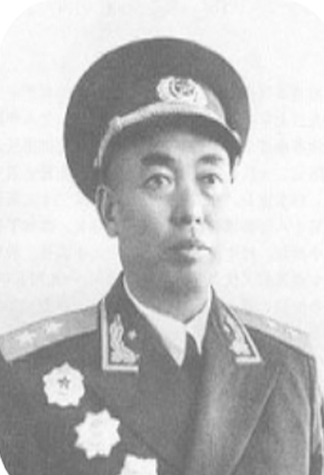

十八军政委谭冠三
谭冠三（1901年一1985年12月6日），曾用名谭才儒、谭年春。是湖南省耒阳市人。
中国共产党优秀党员，久经考验的忠诚共产主义战士、无产阶级革命家、中国人民解放军卓越的政治
工作者，中国人民解放军高级将领。1955年被授予中将军衔。 [1] 荣获二级八一勋章、一级独立自由勋章、
一级解放勋章。土地革命战争时期，历任工农革命军第四军军需处文书、中国工农红军第十二军一纵队
政治部宣传科科长、第三十四师训练队队长、第十二师特务连政治委员、第三十四团政治委员兼特派员、
师政治部组织科科长兼三十六团政治委员、红三军第九师二十五团政治委员、师政治部组织科科长
 川 · 藏 · 之 · 旅
川 · 藏 · 之 · 旅